Micheldever Forest, Hampshire
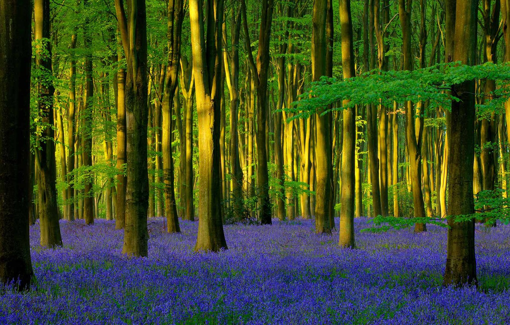.jpg)
From late April to early May, a multitude of dainty bluebells covers the floor of the Micheldever Forest in a “purple carpet.” It is just one of the numerous places across the country where these flowers bloom each spring. You can also find bluebells at the Blickling Estate in Norfolk, Buckland, Devon and Dunham Massey, Cheshire among other places.
scarista beach-uk
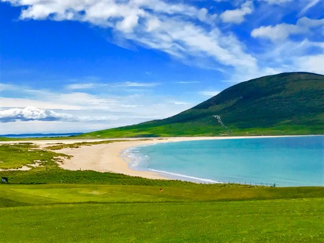.jpg)
.jpg)
.jpg)
The western shores of the twin islets of Lewis and Harris in the Outer Hebrides are carpeted in machair. This fertile grassland is one of the rarest habitats in the UK and puts on a stunning floral display in summer, gleaming yellow, red, white and blue as summer progresses. With talcum-powder sand and turquoise sea, three-mile-long Scarista Beach on Harris is a breathtaking spot at any time of year, but particularly when the fragrant machair is aglow with orchids, harebells, vetches, gentian, centaury, eyebright, gentian and clover.
The Dark Hedges, Northern Ireland
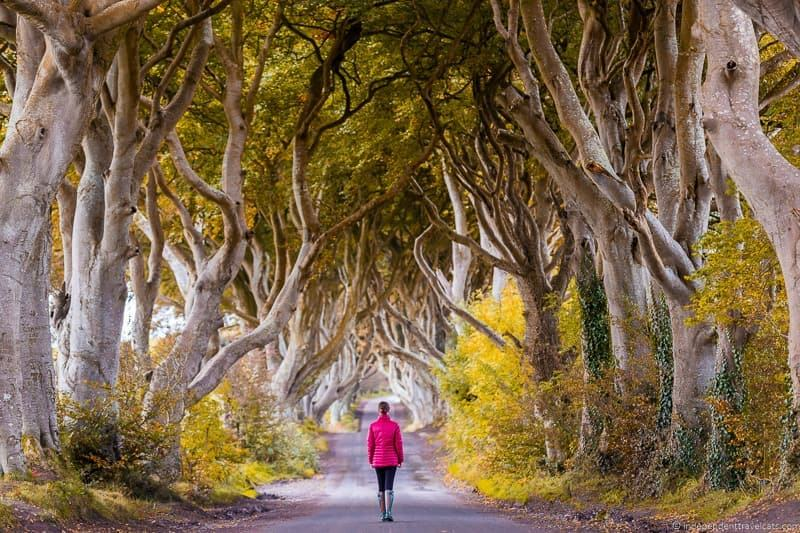.jpg) 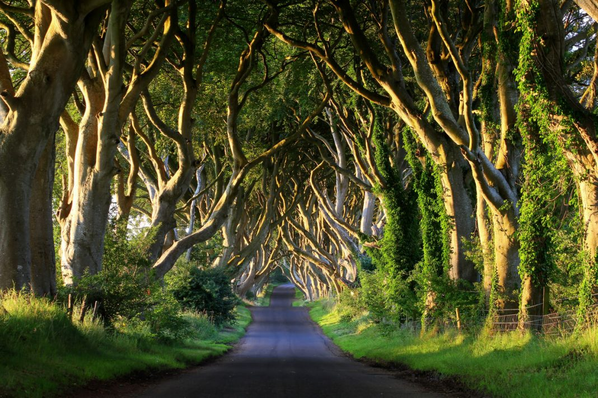
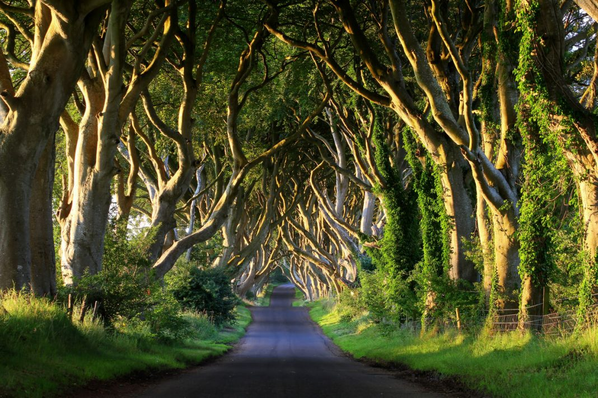
.jpg)
Bregagh Road in County Antrim, Northern Ireland, is popularly known as the Dark Hedges thanks to its tunnel of beech trees. Fans of HBO’s Game of Thrones may also recognise it as the show’s “Kings Road”
Durdle Door, Dorset, England
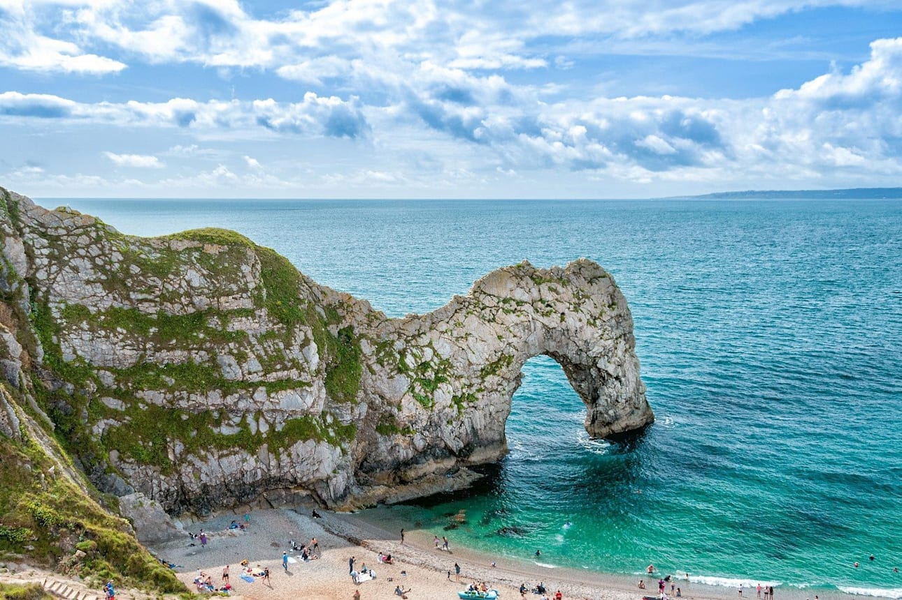
.jpg) 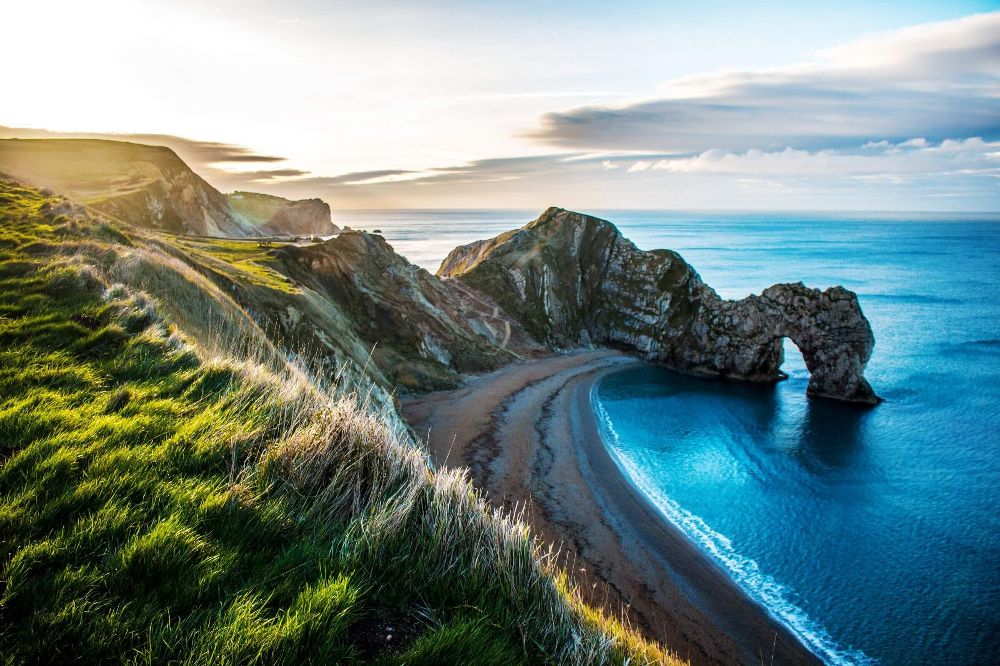
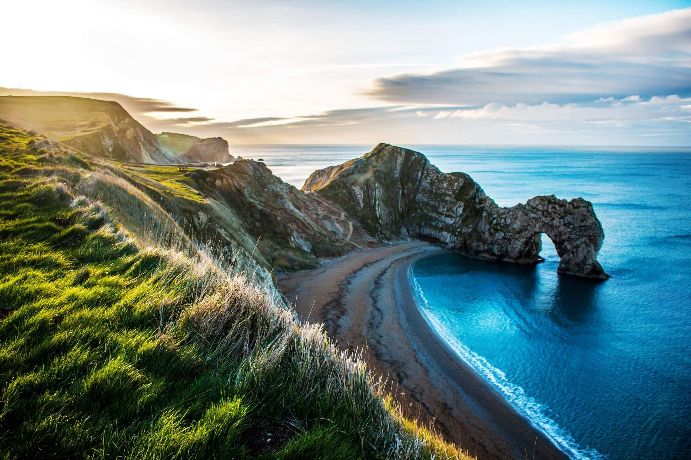
Situated on Dorset’s famed Jurassic Coast (the first natural World Heritage Site in England), a venture to the iconic gargantuan rock arch of Durdle Door is a bit like walking through geological history. The limestone arch has formed over millions of years as the sea waves eroded the rock drilling a hole through the middle. For intrepid explorers navigating the world famous South West Coast Path, Durdle Door not only offers some aesthetical and historical significance, but a chance to rest upon the idyllic beach, or even take a dip in the English Channel.
Giant’s Causeway, County Antrim, Northern Ireland
.jpg)
.jpg) 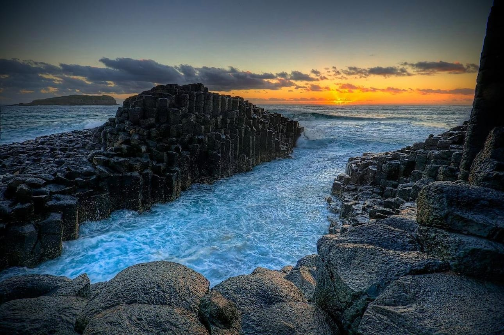
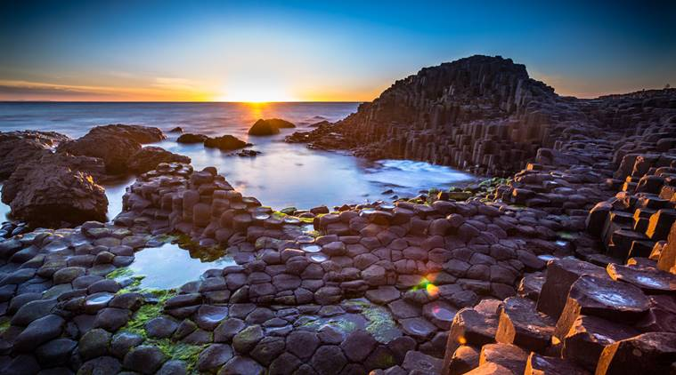
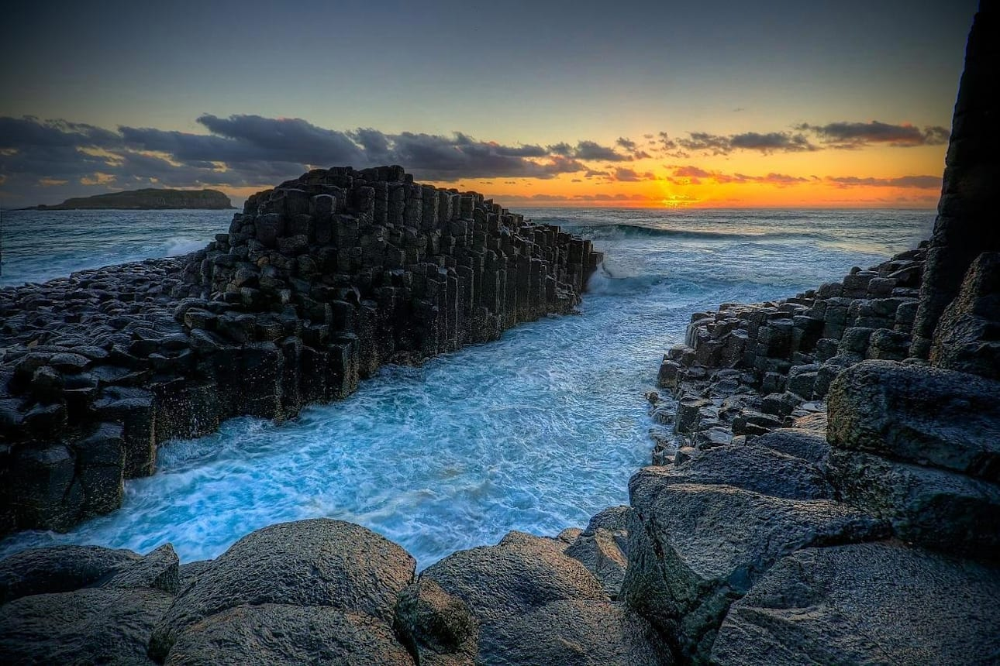
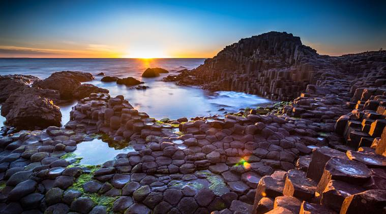
The awe-inspiring Giant’s Causeway rock formation - 40,000 conjoined (mostly hexagonal) basalt columns - on Northern Ireland’s rugged Antrim Coast, was formed back in the mists of time when the Irish giant Finn McCool placed the rocks in the Irish Sea to enable him to cross to Scotland to duke it out with his similarly sized Scottish counterpart Benandonner. Well, that’s what some might say. In reality, this UNESCO World Heritage Site came into being following a volcano 50 to 60 millions years ago. There are a number of hiking trails that end up at this mind-blowing phenomenon; the most apt is the striking 10km coastline walk from Runkerry House to the cliffs of Hamilton’s Seat above the Causeway.
Glenfinnan Viaduct, Scottish Highlands
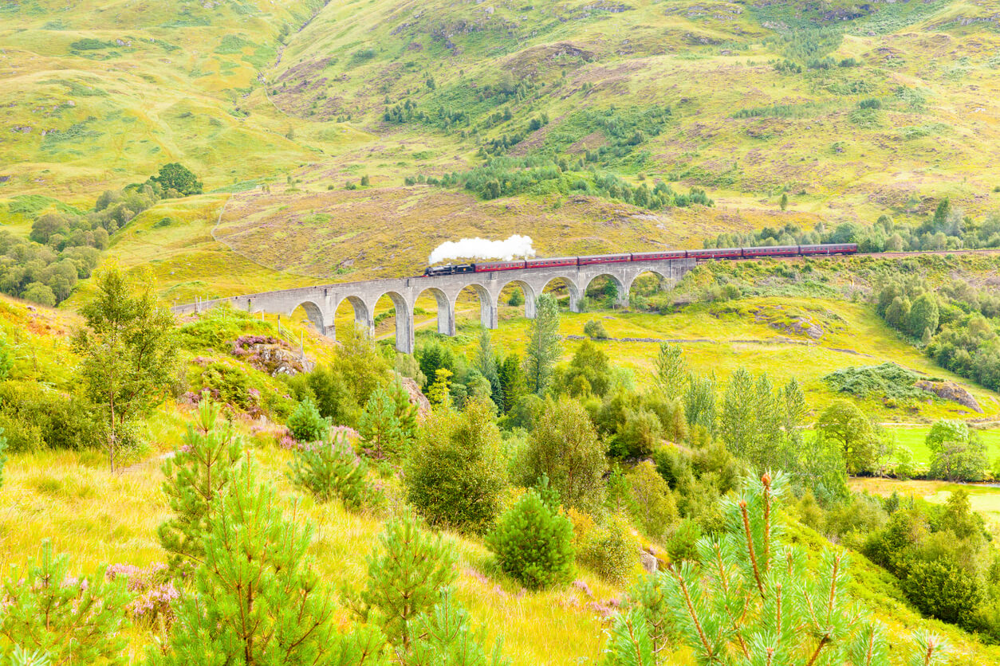.jpg)
.jpg) 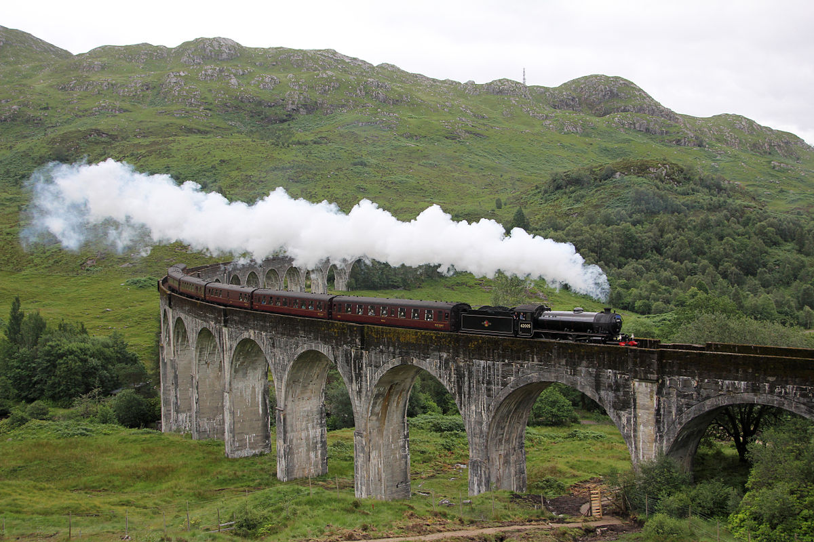
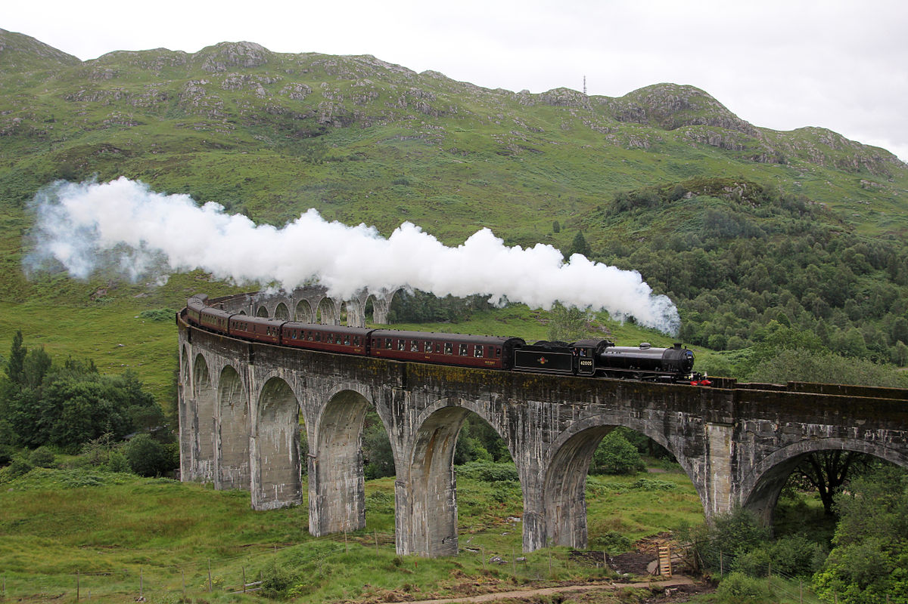
This spectacular railway is perhaps the most instantly recognizable locations in Scotland. Featured in four of the Harry Potter films on the journey the Hogwarts Express makes from King’s Cross Station to the school, it has become known as the Harry Potter bridge.